300 вопросов о цигун. Секреты китайской медицины. Содержание
"18 форм цигуна Великого Предела" представляют собой сочетание некоторых методов тайцзицюаня и способов регуляции дыхания, используемых в цигуне. Особенностью их является простота выполнения, доступность, большой лечебный эффект. Необходимо соблюдать точность выполнения стоек, равномерность и неторопливость движений, согласованность дыхания с движениями, причем вдыхать надо через нос, а выдыхать через рот. Комплекс очень хорошо подходит для больных и людей с ослабленным здоровьем.
Первое упражнение. Принять исходную позу и регулировать дыхание (рис. 18-20). Естественная стойка, ноги стоят ровно, расставлены на ширину плеч или чуть шире, верхняя часть корпуса прямая, глаза смотрят прямо перед собой, грудь немного втянута, а спина выпрямлена, руки спокойно висят вдоль тела. Выполняются следующие движения:
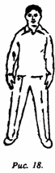
___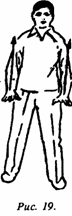
___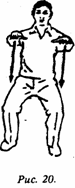
1) обе руки медленно-медленно поднимаются вверх, почти достигая уровня плеч, ладони обращены вниз; одновременно делается вдох.
2) верхняя часть корпуса сохраняет прямое положение, ноги полусогнуты в коленях (угол сгиба коленных суставов примерно 150°, при этом следует обратить внимание на то, чтобы проекция коленей не выходила за линию носков); обе руки с легким давлением опускаются вниз до уровня пупка, ладони обращены вниз; одновременно делается выдох.
Важные моменты: оба плеча должны быть опущены, локти свисают, пальцы сохраняют естественное, слегка согнутое положение; центр тяжести тела проецируется между ногами; при приседании ягодицы не следует слишком выставлять назад, при опускании рук книзу необходимо координировать их движение с приседаниями.
Выполняется 6 раз (вдох-выдох считаются за один раз). Один цикл выполняется на два счета: нечет - руки поднимаются вверх на вдохе, чет - руки опускаются вниз на выдохе. После этого обе руки возвращаются в исходное положение (опускаются вдоль тела по бокам).
Второе упражнение - "раскрывание грудной клетки" (рис. 21, 22). Выполняется на основе предыдущей стойки:
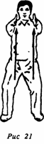
__________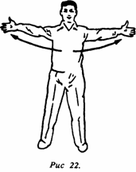
1) из нижнего положения руки поднимаются параллельно друг другу до уровня груди, колени постепенно распрямляются, обращенные вниз ладони разворачиваются друг против друга, затем руки разводятся в стороны в крайнюю позицию, за счет чего грудь раскрывается, одновременно делается вдох;
2) разведенные в стороны руки сводят к центру, очень близко, на уровне груди, затем обе ладони поворачивают вниз, при опускании рук с давлением выполняется приседание, одновременно делается выдох.
Важные моменты: когда прямые руки поднимают до уровня груди, корпус постепенно распрямляют; при опускании рук вниз сразу начинают приседание. Необходимо согласовывать подъем со стойкой, давление с приседанием, вдох с выдохом и с другими движениями. Упражнение выполняется б раз (вдох-выдох считаются за один раз).
Третье упражнение - "раскачивание радуги" (рис. 23, 24). Выполняется на основе предыдущей стойки:
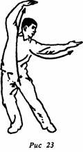
__________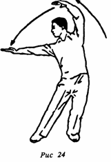
1) руки поднимают параллельно друг другу до уровня груди, в этот момент постепенно распрямляют согнутые колени, затем руки поднимают до уровня макушки, вытягивают прямо с ладонями, обращенными вперед, одновременно делают вдох;
2) центр тяжести слегка перемещается на правую ногу, правая нога немного сгибается в коленном суставе, ее подошва полностью касается земли; левая нога вытягивается вперед, носком упирается в землю, пятка оторвана от земли; выпрямленная левая рука от макушки движется влево до горизонтального положения, ладонь обращена вверх; правая рука согнута в локте, образуя полукруг, ладонь обращена вниз, корпус движется вправо; все это время продолжают делать вдох;
3) центр тяжести перемещается на левую ногу, стопа полностью касается земли, прямая правая нога вытянута вперед, пятка приподнята, носок упирается в землю; прямая правая рука от макушки движется вправо до горизонтального положения, ладонь обращена вверх; левая рука постепенно сгибается в локте, достигая уровня макушки и образуя полукруг, ладонь обращена вниз; корпус движется влево, одновременно делается выдох.
Важные моменты: при махах руками необходимо координировать движение корпуса и дыхание; надо следить за тем, чтобы они были плавными. Упражнение выполняется 6 раз (вдох-выдох считаются за один раз).
Четвертое упражнение - "вращать руками, разгоняя облака" (рис. 25, 26). Выполняется на основе предыдущей стойки:
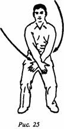
__________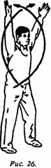
1) центр тяжести тела находится посередине, ноги ставятся в "позу всадника"; левая рука двигается сверху вперед и вниз; правая рука из положения справа сбоку движется вперед и вниз, перекрещиваясь с левой; правая рука сверху, ладони обращены вовнутрь, скрещенные руки находятся на уровне нижней части живота;
2) скрещивание рук сопровождается распрямлением коленей; обе ладони поворачиваются кверху; скрещенные руки поднимаются вверх до макушки, ладони обращены вверх; одновременно делается вдох;
3) обращенные вверх скрещенные ладони разворачиваются наружу; руки распрямляются и одновременно разводятся по сторонам вниз с обращенными вниз ладонями; когда ладони достигают первоначального положения, обе руки медленно скрещиваются на уровне нижней части живота, при этом руки немного согнуты в локтях; одновременно делается выдох.
Важные моменты: руки вращаются вокруг плечевых суставов. Начиная из положения "внизу развернутые внутрь" руки перемещаются в положение "вверху развернутые наружу", описывая два больших круга; когда обе руки находятся на уровне макушки, можно поднять голову и выпятить грудь, чтобы облегчить вдох; на вдох ноги в коленях распрямляются, на выдох сгибаются. Упражнение повторяется б раз.
Пятое упражнение - "твердый шаг с разворотом свитка" (рис. 27, 28):
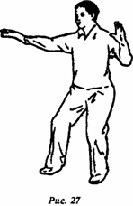
__________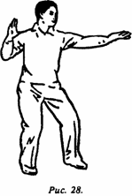
1) из предыдущей стойки принять "позу всадника"; обе руки скрестить на нижней части живота, развернуть ладони, обратить их вверх; левая рука движется вперед и выпрямляется вверх, правая рука минует область живота, двигаясь вниз и назад, затем поднимается вверх, описывая дугу. Теперь надо повернуться вправо в пояснице, взгляд следует за правой рукой; одновременно делается вдох. Затем сгибают в локте правую руку ладонью вперед, проводят ее мимо уха и совершают толкательное движение вперед; одновременно делают выдох. Вытянутая вперед левая рука горизонтально перемещается к груди, при этом едва-едва задевая мизинец правой руки;
2) левая рука продолжает описывать дугу назад, при этом надо в пояснице повернуться влево, глаза должны следить за левой рукой; одновременно делается вдох. Затем левая рука сгибается в локте ладонью вперед и, минуя ухо, движется вперед, выполняя толкательное движение; одновременно делается выдох. Правая рука, выпрямленная вперед, движется горизонтально к груди, при этом едва-едва касаясь мизинца левой руки. Следует выполнять таким образом упражнение правой и левой рукой попеременно.
Важные моменты: областью скрещивания обеих рук является пространство перед грудью; при движении рук назад делается вдох, при выполнении толкательных движений вперед делается выдох. Упражнение выполняется 6 раз.
Шестое упражнение - "грести веслами в лодке" (рис. 29). Выполняется на основе предыдущей стойки:
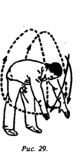
1) кисть левой руки опускается в область низа живота, касаясь правой руки; ладони обеих рук обращаются вверх и перед животом описывают дуги вниз; обе руки распрямляются вверх, ладони обращены вперед; ноги при этом прямые, одновременно делается вдох;
2) вслед за поднимающимися прямыми руками выполняется сгибание поясницы, руки идут по дуге вниз и назад; одновременно делается выдох;
3) когда обе руки находятся сзади в крайнем нижнем положении, поясница распрямляется; прямые руки по сторонам поднимаются до уровня головы, очерчивая дугу с внешней стороны; ладони обращены вперед; одновременно делается вдох.
Важные моменты: руки должны быть выпрямленными; при сгибе поясницы делается выдох, при распрямлении - вдох. Упражнение повторяется б раз.
Седьмое упражнение - "держать мяч перед собой на уровне плеча" (рис. 30, 31). Выполняется на основе предыдущей стойки:
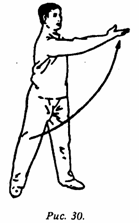
__________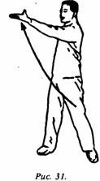
1) поясница согнута, обе руки находятся сзади в крайнем нижнем положении; поясница распрямляется, левая рука неподвижна; правая рука с вращением ладони влево поднимается вверх, достигая уровня левого плеча, при этом делается такое движение, как будто в ладони находится мяч; центр тяжести тела переносится на левую ногу; носок правой ноги касается земли, пятка правой ноги может быть слегка приподнята; при удержании "мяча" делается вдох; когда правая рука возвращается вниз, делается выдох;
2) центр тяжести тела перемещается на правую ногу, носок левой ноги с усилием давит на землю; когда пятка отрывается от земли, левая рука из нижней левой позиции поднимается вперед, достигая верхней правой позиции; по достижении уровня правого плеча делается такое движение, будто в руке удерживается мяч; одновременно делается вдох. Когда левая рука возвращается назад вниз, в исходную позицию, делается выдох.
Важные моменты: когда левая и правая руки имитируют движение удержания (в кисти) мяча, глаза пристально смотрят на "мяч", при этом внешняя сторона носков обеих ног с усилием давит на землю. Необходимо координировать движения удержания "мяча", давление на землю и вдох. Упражнение выполняется 6 раз.
Восьмое упражнение - "вращать тело, глядя на луну" (рис. 32). Выполняется на основе предыдущей стойки:
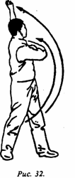
1) обе ноги стоят в естественном положении, руки опущены; когда двумя прямыми руками начинают делать махи назад влево и вверх, верхняя часть тела движется влево; голову также поворачивают влево назад и вверх, как будто смотрят на луну; одновременно делается вдох; затем возвращаются в исходную позицию; одновременно делается выдох;
2) обеими выпрямленными руками делают мах назад вправо и вверх, верхнюю часть тела поворачивают вправо; голову поворачивают назад вправо и вверх, как бы глядя на луну; одновременно делается вдох; затем возвращаются в исходную естественную стойку; одновременно делается выдох.
Важные моменты: необходимо координировать махи рук, поворот поясницы и головы. Когда "смотрят на луну", руки и поясница поворачиваются до упора, при этом не следует отрывать пятки от земли. Упражнение выполняют 6 раз.
Девятое упражнение - "вращать тазом, отталкивать ладонями" (рис. 33, 34). Выполняется на основе предыдущей стойки:
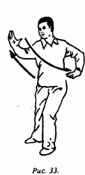
__________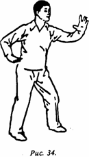
1) встать в "позу всадника"; ладони обеих рук раскрыты и обращены вверх, участок ладони между большим и указательным пальцами обращен наружу; руки покоятся с двух сторон на пояснице, локоть левой руки отведен назад; верхняя часть корпуса делает разворот влево, правая рука с усилием делает толкающее движение ладонью вперед; одновременно делается выдох; затем возвращаются в исходную позицию и одновременно делается вдох;
2) корпус разворачивается вправо, левая рука делает толкающее движение ладонью вперед; одновременно делается выдох; затем возвращаются в исходную стойку, при этом делается вдох.
Важные моменты: отталкивающие движения ладонями выполняются с выпрямленным запястьем, при этом ладони, смотрят вперед, пальцы направлены вверх; когда одна рука делает толкающие движения вперед, другая отводится назад, при этом прилагаемые усилия должны быть примерно одинаковы. Упражнение выполняется б раз.
Десятое упражнение - "облачные движения руками в позе всадника" (рис. 35, 36). Выполняется на основе предыдущей стойки:
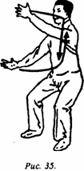
__________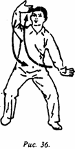
1) после того как выполнено отталкивание левой рукой, левая ладонь поворачивается вовнутрь на уровне глаз; правая рука выдвинута вперед, ладонь обращена влево и находится на уровне пупка; одновременно с поворотом влево поясничного отдела обе руки параллельно движутся влево; при этом делается вдох;
2) при повороте влево до упора правая рука движется вверх, обращенная вовнутрь ладонь находится на уровне глаз. Левая рука движется вниз, обращенная вправо ладонь находится на уровне пупка; одновременно с разворотом поясницы вправо обе руки параллельно движутся вправо, в это время делается выдох.
Важные моменты: надо обратить внимание на плавность движения рук; взгляд все время следует за движением той ладони, которая находится вверху. Упражнение выполняется 6 раз.
Одиннадцатое упражнение - "ловить рыбу в море, смотреть в небо" (рис. 37, 38). Выполняется на основе предыдущей стойки:
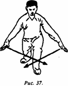
__________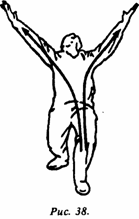
1) вначале надо сделать полшага вперед левой ногой и полуприсесть, став в "позу лучника" (лукообразный шаг, "выпад"), верхнюю часть корпуса наклонить вперед, обе руки скрестить перед левым коленом; одновременно начинать делать вдох;
2) скрещенные руки, следуя за откидывающейся назад верхней частью корпуса, поднимаются вверх; миновав макушку, выпрямленные руки разводятся в стороны; взгляд обращен в небо, ладони смотрят друг на друга; продолжается вдох. При наклоне верхней части туловища вперед руки плавно сводятся, опускаясь вниз, и скрещиваются перед коленом; одновременно делается выдох.
Важные моменты: при наклоне туловища вперед, когда обе руки скрещиваются внизу, делается выдох; когда руки поднимаются вверх, разводятся над головой, а лицо смотрит в небо, делается вдох; когда лицо запрокинуто к небу, обе руки разводятся в стороны прямыми до упора. Упражнение выполняется 6 раз.
Двенадцатое упражнение - "отталкивать волну, помогая прибою" (рис. 39, 40). Выполняется на основе предыдущей стойки:
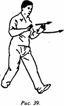
__________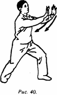
1) поднимая вверх обе руки, выполнить ими толчок вперед и вверх; затем, согнув руки в локтях, остановить их на уровне груди; ладони обращены наружу, центр тяжести тела - на правой ноге; пятка выставленной вперед ноги упирается в землю, носок слегка приподнят;
2) центр тяжести переносится на левую ногу, подошва ноги плотно прижимается к земле, верхняя часть корпуса движется вперед; носок правой ноги упирается в землю, пятка отрывается от земли; обе ладони выполняют толкающее движение вперед, поднимаясь до уровня глаз; одновременно делается выдох.
Важные моменты: когда обе руки возвращаются назад, центр тяжести также переносится назад; одновременно делается вдох; когда руки выталкиваются вперед, центр тяжести переносится вперед; одновременно делается выдох. При правильном выполнении движения напоминают накат волн морского прибоя. Упражнение повторяется б раз.
Тринадцатое упражнение - "летящий голубь расправляет крылья" (рис. 41, 42). Выполняется на основе предыдущей стойки:
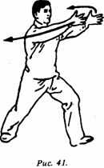
__________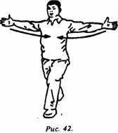
1) руки, вытолкнутые вперед, выпрямить параллельно, ладони развернуть друг к другу; центр тяжести тела перенести на правую ногу; стопа впереди стоящей ноги отрывается от земли, вытянутые вперед параллельно друг другу руки разводятся в стороны до упора; одновременно делается вдох;
2) без перерыва центр тяжести переносится на левую ногу, пятка правой ноги отрывается от земли; разведенные до упора назад выпрямленные руки сводятся перед грудью; одновременно делается выдох.
Важные моменты: когда корпус откидывается назад, руки напоминают раскрытые крылья птицы; когда руки разводятся в стороны, делается вдох, а когда сводятся впереди перед грудью, делается выдох. Упражнение выполняется 6 раз.
Четырнадцатое упражнение - "наносить удары кулаком выпрямленными руками" (рис. 43, 44). Выполняется на основе предыдущей стойки, но меняется положение ног (вместо "позы лучника" используется "поза всадника"); кисти рук находятся на пояснице, ладони обращены вверх. Движения следующие:
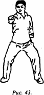
__________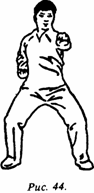
1) при движении вперед кулака правой руки делается выдох, при возвращении в исходную позицию - вдох;
2) при движении вперед кулака левой руки делается выдох, при возвращении в исходную позицию - вдох.
Важные моменты: при переходе из "позы лучника" в "позу всадника" выдох должен быть несколько продлен, при нанесении ударов кулаками необходимо концентрировать внутреннее усилие для удара; при ударе кулаком делается выдох, взгляд направлен на кулак. Упражнение выполняется 6 раз.
Пятнадцатое упражнение - "полет гуся" (рис. 45, 46). Выполняется на основе предыдущей позиции. В положении стоя обе руки развернуты в стороны и выровнены. Движения следующие:
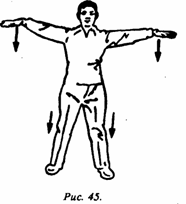
__________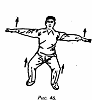
1) глубоко присесть до упора. Обе руки как бы что-то прижимают к земле; поза напоминает большого дикого гуся в полете; одновременно делается выдох;
2) встать, при этом обе вытянутые на одном уровне руки поднимаются вверх; одновременно делается вдох.
Важные моменты: запястье должно быть мягким, расслабленным; необходимо правильно совмещать приседания и подъемы с движением рук вниз и вверх, с вдохом и выдохом. Упражнение выполняется 6 раз (одно приседание и один подъем считаются за один раз).
Шестнадцатое упражнение - "вращение маховика" (рис. 47, 48). Выполняется на основе предыдущей стойки, при этом используется положение стоя, руки находятся перед нижней частью живота. Движения следующие:
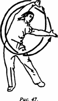
__________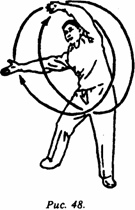
1) обе руки выпрямлены, одновременно с вращением таза делаются круговые движения руками влево и вверх; руки поднимаются слева до уровня макушки, одновременно делается вдох; когда, миновав макушку, руки начинают двигаться вправо и вниз, делается выдох. Все движения повторяются 3 раза.
2) направление движения рук меняется на противоположное. Соответствующие движения выполняются 3 раза.
Важные моменты: когда совершают руками круговые движения, одновременно вращают тазом; необходимо правильно координировать движения рук, таза и дыхание.
Семнадцатое упражнение - "топнуть ногой, ударить по мячу" (рис. 49). Выполняется на основе предыдущей стойки:
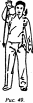
1) поднять вверх левую ногу, правой рукой на уровне правого плеча имитировать движение ударов по мячу; одновременно делается вдох;
2) поднять правую ногу, левой рукой на уровне левого плеча имитировать удары по мячу; одновременно делается выдох.
Важные моменты: необходимо согласованно с дыханием выполнять как одно движение поднятие рук, удары по "мячу" и движения ног, - получается словно ходьба на месте; движения должны быть очень легкими, расслабленными и радостными. Упражнение выполняется 6 раз (за один раз считаются движения ударов по "мячу" левой и правой рукой).
Восемнадцатое упражнение - "надавливая ладонями, разглаживать воздух" (рис. 50, 51). Выполняется на основе предыдущей стойки в положении стоя, руки находятся перед нижней частью живота. Движения следующие:
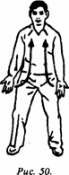
__________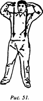
1) пальцы обеих рук обращены друг к другу, ладони повернуты вверх, от уровня груди поднимаются до уровня глаз; одновременно делается вдох;
2) ладони обеих рук, повернутые пальцами одна к другой, поворачиваются и обращаются вниз, от уровня глаз ладони с давлением опускаются до уровня нижней части живота; одновременно делается выдох.
Важные моменты: при движении вверх делается вдох, при давлении вниз - выдох, темп замедленный. Упражнение выполняется б раз (один подъем и одно опускание рук считаются за один раз).
_____
18 форм цигуна "Великого Предела" (Тайцзи цигуна). - Эта методика разработана самим Линь Хоушэном и получила широкое распространение благодаря своей простоте и эффективности. Перевод ее неоднократно издавался на русском языке (см.: Смирнова Ю.А. Современная китайская оздоровительная система тайцзи-цигун: Реф. справка. - М.: ЦНИ-ИМС Госкомспорта СССР; Богачихин М.М. Уроки китайской гимнастики: Вып. 1. - М.: Сов. спорт, 1990. - С. 35-44; Линь Хоушэн. "18 форм" тайцзи-цигун // ЦиС. - 1991. - № 1. - С. 11-19). В указанных вариантах (особенно в последнем) есть некоторые разночтения в описании движений, количестве подходов и даже в чередовании вдохов-выдохов. Исходя из того, что книга "Секреты китайской медицины" является главным произведением мастера Линь Хоушэна, мы отдаем приоритет именно этому тексту.
300 вопросов о цигун. Секреты китайской медицины. Содержание